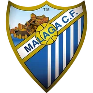
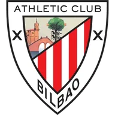

Малагадома, 20-е место
Атлетик Бильбаов гостях, 8-е местоМалага — Атлетик Бильбао прогноз на матч 28 ноября
Расчёт модели
- 0,9 : 1,3ожидаемые голы
- 37 %тотал больше 2,5
- 43 %обе забьют
Цифры считает модель по данным сайта, а не эксперт. Это вероятности, а не гарантия исхода. Как считает модель · словарь терминов.
- ТурнирЛа Лига
Коротко о матче
Главное перед игрой — серия: Малага — 3 поражения подряд. По форме разница заметная: в пяти последних матчах Атлетик Бильбао — 2 победы, Малага — ни одной победы. Слабое место — оборона: Малага — в среднем 2,2 пропущенного мяча за игру в этих пяти матчах, так что у соперника будут моменты.
Стоит учесть и площадку: дома Малага — ни одной победы в 6 матчах, на выезде Атлетик Бильбао — 1 победа в 5.
По расчёту модели фаворит — Атлетик Бильбао: 46 % на победу. Это оценка по данным, а не обещание исхода.
Стартовые составы
- 1Herrero
- 16Диего
- 5Алекс
- 15Recio
- 12Хосе
- 11Muñoz
- 14Rodríguez
- 18Моралес
- 10Давид
- 8Дотор
- 21Ниньо
Ожидаемый состав по данным FotMob — с учётом травм и дисквалификаций. Официальный появится примерно за час до начала.
- 1Симон
- 15Rincón
- 5Альварес
- 14Лапорт
- 17Берчиче
- 28Каналес
- 6Прадос
- 7Беренгер
- 8Сансет
- 10Уильямс
- 9Уильямс
Ожидаемый состав по данным FotMob — с учётом травм и дисквалификаций. Официальный появится примерно за час до начала.
Не сыграют
 Малага
Малага
- Лозанотравма, вернётся в начале декабря
- Caleroтравма, вернётся в середине декабря
- Очоатравма · под вопросом
 Атлетик Бильбао
Атлетик Бильбао
- Моренотравма, вернётся в середине декабря
- Eguiluzтравма, вернётся в середине января
- Гурусетатравма
- Саннадитравма, вернётся в начале декабря
Травмы и дисквалификации на этот матч, по данным FotMob. Обновляется несколько раз в день.
Отдых и расписание
У хозяев 5 дней отдыха, у гостей 7 дней отдыха.
Малагахозяева
- 5дней отдыха
- 2матча за 7 днейвключая этот
- 1-йдомашний матч подряд
- 9дней до следующегоСевилья
Прошлый матч: 22.11, Осасуна — Малага 1:0
Атлетик Бильбаогости
- 7дней отдыха
- 1матч за 7 днейвключая этот
- 1-йвыездной матч подряд
- 8дней до следующегоРеал Мадрид
Прошлый матч: 20.11, Атлетик Бильбао — Эспаньол 0:1
Отдых считаем от начала прошлого матча. Еврокубок через 3–4 дня после матча — частая причина ротации.
Форма: последние матчи
Малага 0 побед из 5
 П2:5
П2:5 Н1:1
Н1:1 П1:2
П1:2- П1:2
 П0:1
П0:1
Атлетик Бильбао 2 победы из 5
 П1:3
П1:3 В4:0
В4:0- В2:1
- Н1:1
 П0:1
П0:1
Кто в форме
Больше всего голов и передач в последних матчах команды (все турниры).
Малагаза 5 последних матчей
| Игрок | Г | П | Г+П |
|---|---|---|---|
| Адриан Ниньо | 3 | 1 | 4 |
| Пабло Мартинес Моралес | 1 | 1 | 2 |
| Карлос Дотор | 1 | 0 | 1 |
| Энрикес, Рамон | 0 | 1 | 1 |
Атлетик Бильбаоза 5 последних матчей
| Игрок | Г | П | Г+П |
|---|---|---|---|
| Алекс Беренгер | 3 | 3 | 6 |
| Иньяки Уильямс | 2 | 0 | 2 |
| Нико Уильямс | 1 | 1 | 2 |
| Айтор Паредес | 1 | 0 | 1 |
| Юри Берчиче | 1 | 0 | 1 |
Дома и в гостях
Хозяева — в своих домашних матчах, гости — в выездных. Чемпионат этого сезона.
| Матчей | 6 | 5 |
|---|---|---|
| Побед | 0 из 6 | 1 из 5 |
| Ничьих | 3 | 2 |
| Забивают за игру | 1,0 | 0,8 |
| Пропускают за игру | 2,0 | 1,2 |
| Тотал больше 2,5 | 50% | 20% |
| Обе забили | 83% | 40% |
| «Сухих» матчей | 17% | 40% |
Жирным — лучшее из двух.
Положение в таблице
| Команда | Место | И | В | Н | П | Голы | Очки |
|---|---|---|---|---|---|---|---|
| 20 | 13 | 0 | 5 | 8 | 9:24 | 5 | |
| 8 | 12 | 4 | 4 | 4 | 15:12 | 16 |
Другие матчи Ла Лиги в этот день
Куда дальше
Материалы носят информационный характер и не гарантируют результат. Реклама букмекеров на сайте не размещается. Сайт только для совершеннолетних (18+).